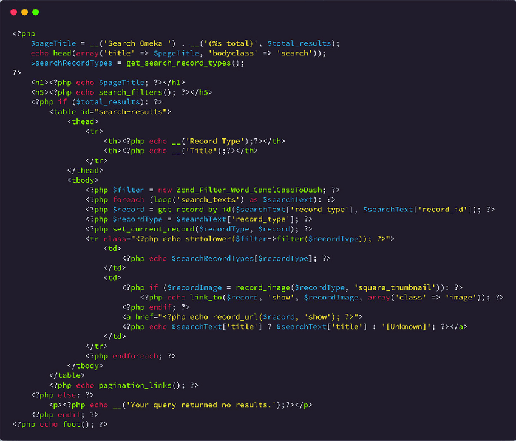

PHP (1994)
PHP (PHP: Hypertext Preprocessor), é uma linguagem de programação para o desenvolvimento web. Foi criada por Rasmus Lerdorf no final da década de 1990 e tem como principal objetivo facilitar a criação de páginas dinâmicas e interativas na web.

A sigla PHP originalmente significava "Personal Home Page", Uma das principais características da linguagem é sua capacidade de se integrar facilmente ao HTML, permitindo a inclusão de trechos de código dentro de um documento HTML, essa linguagem de programação é interpretada no lado do servidor, ou seja, o código é processado no servidor antes que a página seja enviada para o navegador do usuário.
Atividade desenvolvida como extensão no projeto
PACEX/Mundo Tech do curso de análise e Desenvolvimento de Sistemas
Unipar - Cascavel